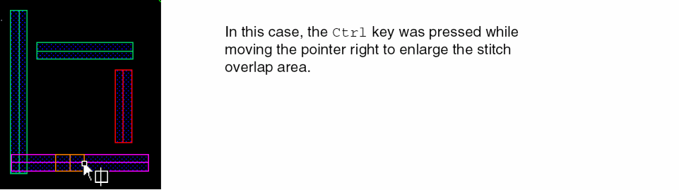

5
Checking and Fixing Multiple Patterning Violations in Layout
Virtuoso® Multi-Patterning Technology (MPT) in Layout Editor lets you:
- Check for multiple patterning violations using Virtuoso® Design Rule Driven (DRD) Edit.
- Perform in-design verification using Pegasus Interactive to improve design quality and increase productivity.
- Fix multiple patterning violations by moving, stretching, splitting, and stitching shapes.
The following topics are included in this chapter:
- Types of Color Checks
- Checking for Multiple Patterning Violations
- Using the Annotation Browser to View Multiple Patterning Violations
- Fixing Multiple Patterning Violations
- Verifying the Consistency of Color Assignments
Types of Color Checks
Color checks on a layout are categorized as follows:
Color Rule Violations
Same-mask spacing violations occur when the distance between two shapes of the same color is less than the same-mask spacing. Different-mask (diff-mask) spacing violations occur when the distance between two shapes of different masks is less than the diff-mask spacing. Same-mask spacing is less than diff-mask spacing.
For more information on the constraints used to specify same-mask and diff-mask spacing, refer to Specifying Same-Mask and Diff-Mask Spacing Constraints.
Color Shorts
Color shorts are overlaps between shapes with different colors, irrespective of their lock status.
Uncolored Shapes
Uncolored shapes on a multiple mask layer can be reported.
Colorability
Colorability violations occur when the layout topology results in two adjacent shapes in a set of shapes on the same layer to have the same color. This condition is called an odd cycle loop in double patterning technology and is caused by an odd number of shapes in the set. The following example shows an odd cycle loop with different colorings applied, but none of them satisfies the same-mask spacing requirement for all the shapes.
A similar conflict can occur with triple patterning technology, as shown below.
Checking for Multiple Patterning Violations
The following sections describe two ways to check for multiple patterning violations:
Using Color-Aware DRD Edit
In Enforce and Notify modes, DRD can provide visual feedback to prevent certain types of multiple patterning violations.
In Post-Edit and Batch modes, DRD can report multiple patterning violations as annotation markers in the workspace and in the Annotation Browser.
Checking for Multiple Patterning Violations Using DRD
To check for color violations in enforce, notify, or post-edit modes,
-
Choose Options – DRD Edit.
The DRD Options form appears.

- Choose one or more DRD modes (Enforce, Notify, or Post-Edit).
- Choose Multiple Patterning Options, as described in DRD Color Checks in Virtuoso Design Driven Editing User Guide.
-
Click OK or Apply.
As you modify the design, annotations will appear when multiple patterning violations are detected. If Post-Edit was selected, annotation markers can also be viewed in list form in the Annotation Browser. For more information, see Using the Annotation Browser to View Multiple Patterning Violations.
To check for color violations in batch mode,
-
Choose Verify – Design.
The Batch Checker form appears.
- Choose Color Rules and Color Checks, as described in DRD Color Checks in Virtuoso Design Driven Editing User Guide.
-
Click OK or Apply.
DRD checks the design in batch mode.
For information on how to view the results, see Using the Annotation Browser to View Multiple Patterning Violations.
Using Pegasus Interactive
Pegasus Interactive uses sign off DRC rules to verify the design. The rule deck must include multiple patterning rules in order to check for coloring violations.
Pegasus Interactive checking is run on demand from the Pegasus Interactive toolbar in Virtuoso. The violations, generated by Pegasus Interactive can be displayed as markers in the layout and the Annotation Browser, as described in Using the Annotation Browser to View Multiple Patterning Violations.
For details on using Pegasus Interactive, including requirements, setup, the Pegasus Interactive toolbar, and customizing the rule deck and the environment, see
Using the Annotation Browser to View Multiple Patterning Violations
Use the Annotation Browser for more information on multiple patterning violations found by DRD or Pegasus Interactive.
To open the Annotation Browser,
-
Choose Window – Assistants – Annotation Browser.
You can undock the Annotation Browser and locate it elsewhere on your desktop for better viewing.

-
Choose the DRC/DFM tab.
Annotations are grouped by tool and type: -
(optional) Customize the Browser Pane as described in Annotation Browser in the Virtuoso Layout Suite XL Reference Guide.
For drdEdit spacing violations, the Same Mask column will identify whether the constraint represents a same-mask spacing violation.

-
Click an annotation in the Annotation Browser to highlight its marker in the workspace.

Fixing Multiple Patterning Violations
Move, stretch, and split functions use open space to move shapes away from each other to fix multiple patterning violations.
-
Move shapes apart using Edit – Move.

-
Stretch shapes using Edit – Stretch.
-
Split shapes using Edit – Advanced – Split.

When shapes cannot be moved due to crowding, use stitch to replace one shape with two overlapping shapes, as described in Using Stitch for Multiple Patterning Violations.
Using Stitch for Multiple Patterning Violations
Stitch is used to replace one shape with two overlapping or stitched shapes on different masks of the same layer. This is useful to resolve multiple patterning violations when there is limited or no open space in the area of the violation.
The following topics are described in this section:
Setting Stitch Constraints
The minStitchOverlap constraint defines the minimum required overlap between two stitched shapes for a given layer. If this constraint is not specified, the minimum required overlap is equal to the minWidth constraint value.
The minStitchOverlap constraint can be set in the ASCII technology file. The following example sets the minimum required overlap to 0.06 user units for the M1 layer in a constraint group named minStitchOverlapCG.
;( group )
;( ------------------- ------------ )
( "minStitchOverlapCG" nil nil 'or
spacings(
( minStitchOverlap "M1" 0.06 )
) ;spacings
) ;minStitchOverlapCG
The minStitchOverlapCG constraint group can be included as a member group of the foundry constraint group. This ensures that the constraints in minStitchOverlapCG are included in the constraint lookup hierarchy.
;( group [override] )
;( -------- --------- )
( "foundry" nil
memberConstraintGroups(
; listed in order of precedence
"minStitchOverlapCG"
) ;memberConstraintGroups
)
Creating Stitches
To create two stitched shapes from one shape,
- Enable stitching, as described in Using Stitch and UnStitch.
-
In the Multiple Patterning toolbar, click the Stitch icon.

The command mode becomesstitchand the Stitch icon appears next to the pointer in the workspace.
-
Click the shape to be stitched.
The shape is highlighted in gray and the stitch overlap area is shown.
- Move the cursor across the shape to the location for the stitch.
-
(Optional) Enlarge or shrink the stitch overlap area by pressing the
Ctrlkey while moving the pointer across the shape.
 -
Click to make the stitch.
The shape is broken into two shapes of opposite colors, forming a different color group, with the desired overlap.
Removing Stitches
- Enable unstitching, as described in Using Stitch and UnStitch.
-
In the Multiple Patterning toolbar, click the UnStitch icon.

The command mode becomesunstitch, and the Stitch icon appears next to the mouse pointer. -
Click a shape to unstitch it from its partner.
The stitch is removed between the two shapes, forming one contiguous shape.
Stitch Restrictions
- Stitch will not operate on "gray" shapes with no color assignment.
- Stitched shapes cannot be stretched.
- Unstitch cannot be performed if a stitched shape has been deleted or moved so that it no longer overlaps the original stitch region with its partner.
Verifying the Consistency of Color Assignments
To ensure that constraints have been followed in the design, you must verify the consistency of color assignments between a schematic and layout. The two methods to verify the consistency of color assignments are described below:
Virtuoso Coloring Check
To verify net mask color assignment using Virtuoso, use the Net Color Constraint Check and CDF Color Check options available in the Verify menu of VLS XL.
To verify net mask color assignment:
- Choose Connectivity – Check – Against Source.
- Type the Library, Cell, and View names of the schematic in the Use schematic view and Use configuration view sections in the Update Connectivity Reference form.
- Click OK.
- Choose Verify – Net Color Constraint Check.
The details of the color mismatch and related warning are displayed in the CIW.

The mismatches are displayed in the Annotation Browser.

To verify CDF color assignment:
- Choose Connectivity – Check – Against Source.
- Type the Library, Cell, and View names of the schematic in the Use schematic view and Use configuration view sections in the Update Connectivity Reference form.
- Click OK.
- Choose Verify – CDF Color Check.
The details of the color mismatch and related warning are displayed in the CIW.

The violation markers are displayed in the Misc tab of the Annotation Browser.

LVS Coloring Check
You can use Layout Versus Schematic (LVS) color checking to verify color assignments. You must generate the color constraint file to perform LVS coloring check. This file contains color information and is specified as an additional input to the LVS application.
To verify color assignment using LVS:
-
Choose File – Export Color Constraint File in the schematic view.
The Export Color Constraint File form appears.
-
Select the Color A Layer Name(s), Color B Layer Name(s), and Export CDF color options on the Export Color Constraint File form. Also, type the Log file name.You can specify the values in the Color A Layer Name(s), Color B Layer Name(s), and Log file name fields using the environment variables, colorConstFileColorAName
, colorConstFileColorBName, colorCDFCheck, and colorConstFileName.
The figure below displays the LVS-based coloring check flow.
Return to top